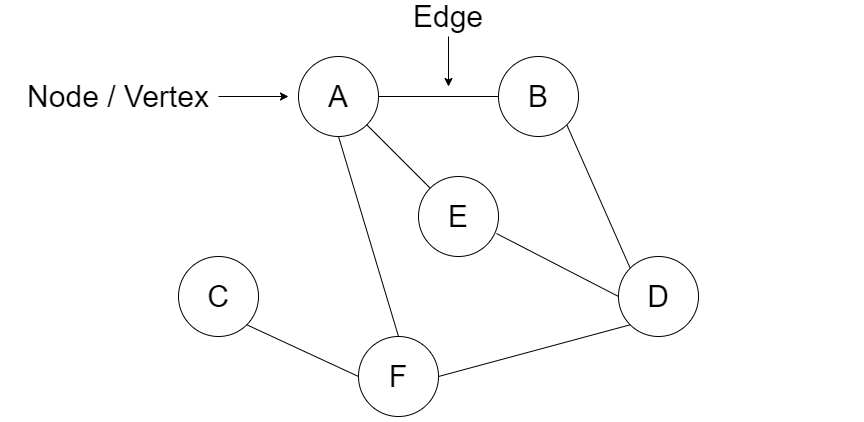
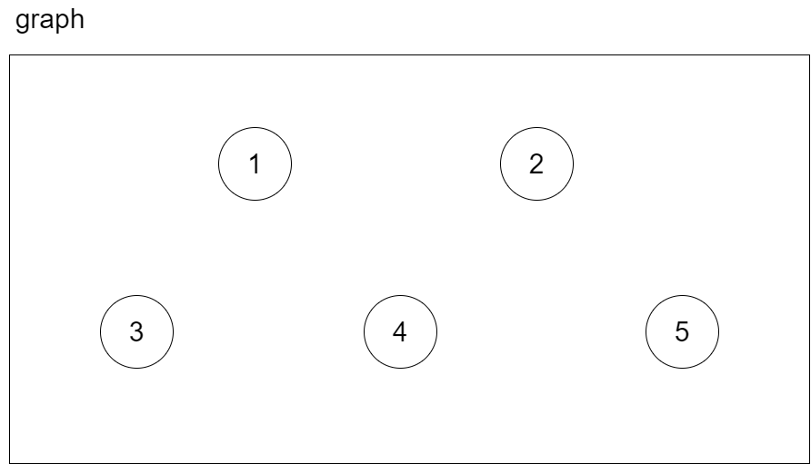
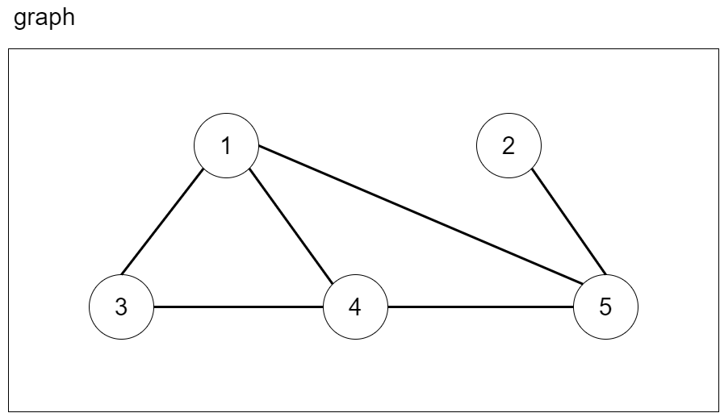

A graph is a data structure that consists of nodes that store data and are connected to other nodes by links. The nodes in a graph are referred to as vertices while the links are called edges. Graphs are used in many real world applications, such as in a social media network where the nodes represent the profile of people and the edges between people represent whether the individuals are friends. Another example of a graph could be a map, the nodes can represent a specific location or building while the edges are the streets that show whether there is a street that connects two locations together.

Graphs can be broken down into two distinctive types, directed and undirected. The difference between the two types of graphs depend on whether the edges allow only one-way traversals between nodes or allow bidirectional movement.
Links in an undirected graph create a path where back and forth traversals between the two nodes are allowed. If two nodes, A and B, are connected via a link in a undirect graph then that means that you can travel starting from node A to node B and well as starting from node B to node A. This concept can be visualized as a two-way street where you can travel in both directions on that street.
Links in a directed graph are directionally dependent, this means that just because node A and node B are connected via a link you cannot travel from each respective node to the other. Directed graphs can be visualized as one-way streets where you are only able to travel in the direction that the edge is pointing to.
Java does not have a built-in collection for the graph data structure, however this data structure can easily be implemented with the help of other built-in data structures. In this implementation, we will be coding the structure of an undirected graph. The code for a directed graph is very similar and only differs on how the edges are added.
The first step in creating the graph data structure is to create a class to represent the graph. The Graph class will then have a subclass called Node that will allow us to create nodes/vertices to hold our data. The Graph class will also contain a HashMap data structure that will contain the key-value pairs of the nodes in the graph where the key will represent the data of a node and the value will be a reference to the actual node itself. We will be using the built-in HashMap collection to simplify our code and therefore will have to import the class.
import
java.util.HashMap;
class
Graph<T>{
HashMap<T, Node> nodeLookup =
new
HashMap<T, Node>();
}
The key components of a graph are the nodes and the edges that link the nodes together. Inside of the Node class, we want to create a variable to store the data of the object as well as to have a data structure to hold a list of adjacent nodes that the object is connected to which represent the edges. To store the information of the adjacent nodes, we will use a LinkedList data structure that will hold all the node addresses for quick access.
import
java.util.HashMap;
import
java.util.LinkedList;
class
Graph<T>{
HashMap<T, Node> nodeLookup =
new
HashMap<T, Node>();
public class
Node{
T data;
LinkedList<Node> adjacent =
new
LinkedList<Node>();
public
Node(T data){
this
.data = data;
}
}
}
This is the basic structure of our graph, however we still need to implement a couple methods to allow us to create nodes as well as to establish the links between nodes. The required methods needed to make this data structure functional are as follows:
add(T data):
Creates a new node object and adds it to the nodeLookup hashmap
createEdge(T data1, T data2):
Creates an edge between the two nodes specified in the parameters
showGraph():
This method is not required, however it provides a good visual representation of the graph
The first method we need to implement is a method that will allow us to add a node to our graph. This is a very simple method as it creates a node and adds this node to our HashMap if the node does not already exist in the map.
public void
add(T data){
nodeLookup.putIfAbsent(data,
new
Node(data));
}
The second method takes in the values of two nodes that we want to link together then creates the edge between the two nodes. This method is written for an undirected graph, however the implementation for a directed graph is very similar and only differs in which adjacent node list we update. This method grabs the node locations of the parameters by referencing our HashMap. It then checks to confirm that the nodes exist in our graph before trying to establish links. If both nodes exist, then each node is added to each others adjacent LinkedList object.
public void
createEdge(T data1, T data2){
Node n1 = nodeLookup.get(data1);
Node n2 = nodeLookup.get(data2);
if
(n1 ==
null
|| n2 ==
null
){
return
;
}
n1.adjacent.add(n2);
n2.adjacent.add(n1);
}
This is a bonus method that outputs the nodes in the graph as well as the connections between all of the nodes. A for each loop is used to iterate through each of the nodes in the HashMap. Another for each loop is used to interate through the nodes in each LinkedList to output the connections.
public void
showGraph(){
for
(T key : nodeLookup.keySet()){
System.out.println("Node: " + key);
System.out.print("Connected To: ");
for
(Node node : nodeLookup.get(key).adjacent){
System.out.print(node.data + " ");
}
System.out.println();
System.out.println();
}
}
With our graph class in place, we can walk through an example in our main function. The first step is to create an instance object of the Graph class.
public static void
main(String[] args){
Graph graph =
new
Graph();
}
Once we have created the graph object, we can add nodes to the graph by calling the add() method. Let’s add five nodes to the graph where each node contains a value from 1 to 5.
public static void
main(String[] args){
Graph<Integer> graph =
new
Graph<Integer>();
graph.add(1);
graph.add(2);
graph.add(3);
graph.add(4);
graph.add(5);
}

We can now create the edges between our nodes by calling the createEdge() method. Let’s create the following links between our nodes:
Edge between: 1 and 3
Edge between: 1 and 4
Edge between: 1 and 5
Edge between: 2 and 5
Edge between: 3 and 4
Edge between: 4 and 5
public static void
main(String[] args){
Graph<Integer> graph =
new
Graph<Integer>();
graph.add(1);
graph.add(2);
graph.add(3);
graph.add(4);
graph.add(5);
graph.createEdge(1, 3);
graph.createEdge(1, 4);
graph.createEdge(1, 5);
graph.createEdge(2, 5);
graph.createEdge(3, 4);
graph.createEdge(4, 5);
}

We can now verify whether the graph we created is what we expected by calling the showGraph() method and seeing the console output.
public static void
main(String[] args){
Graph<Integer> graph =
new
Graph<Integer>();
graph.add(1);
graph.add(2);
graph.add(3);
graph.add(4);
graph.add(5);
graph.createEdge(1, 3);
graph.createEdge(1, 4);
graph.createEdge(1, 5);
graph.createEdge(2, 5);
graph.createEdge(3, 4);
graph.createEdge(4, 5);
graph.showGraph();
}
Console Output:
Node: 1
Connected To: 3 4 5
Node: 2
Connected To: 5
Node: 3
Connected To: 1 4
Node: 4
Connected To: 1 3 5
Node: 5
Connected To: 1 2 4
The console output matches up with the visual representation that we expected